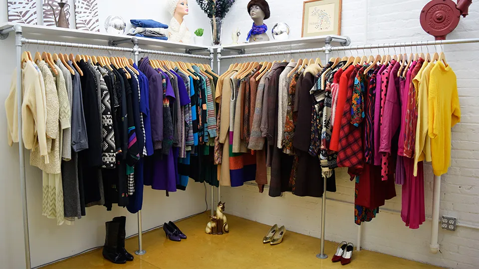

Instructies
Ontdek hoe kledingruil werkt en leer hoe je jouw kledingkast kunt vernieuwen zonder een cent uit te geven! Leer hoe je jouw ongedragen kleding een nieuw leven kunt geven en tegelijkertijd duurzaamheid en gemeenschapsgevoel kunt bevorderen.
Hoe werkt het?
Kledingruil werkt overal weer een tikkeltje anders. Zo zijn er kledingruilwinkels, waar je gewoon naar binnen kunt lopen
Wat zijn de regels bij kledingruil?
- Er is een minimum en een maximum aantal kledingstukken dat je mag meebrengen.
- Alle kleding moet schoon zijn en zonder beschadigingen.
- Accessoires worden in sommige gevallen ook geaccepteerd.
- Vaak is er alleen dameskleding. Soms zijn er speciale edities voor kinderkleding. Voor de heren is er helaas (nog) weinig te vinden.
Kledingruil Tips
- Draag kleding waar je makkelijk in kan passen. Paskamers ontbreken vaak. Ik draag altijd iets wat makkelijk uit kan met een zwarte legging en spaghettitopje eronder. Daar kun je alles overheen passen.
- Zie je iets in het rek hangen waar je waar je nog over twijfelt? Pak het! Als je je omdraait is het weg. Ik verzamel meestal een paar twijfelgevalletjes. Als ik mijn handen vol heb ga ik passen, maak mn keuze en hang dan alles terug wat ik niet wil. Dit herhaal ik een paar keer.
- Neem een boodschappentas of rugtas mee waar je je handel in kwijt kunt. Zo heb je je handen vrij om door de rekken te gaan.
- Ookal is de regel dat alle kledingstukken onbeschadigd moeten zijn, in de praktijk wil er nog wel eens een kapotte trui tussendoor glippen. Doe de volgende check: check de oksels voor gaten en vlekken, check de zomen voor rafels, check de knoopjes en ritsen.
- Heb geduld. De rekken worden elke paar minuten aangevuld, dus als er op het eerste oog niets voor je tussen zit, dan is het aan te raden om even te wachten. Doe even ergens een theetje, of ga in een rustig hoekje even passen en maak vervolgens nog een rondje.